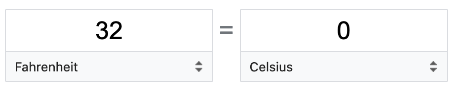
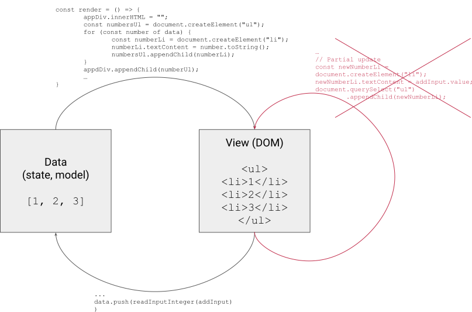

There are (at least) 3 bugs in this code. Can you spot them?
<input id="a" type="number" /> +
<input id="b" type="number" /> =
<span id="result "></span>
<script>
const aInput = document.getElementById("a");
const bInput = document.getElementById("b");
const resultSpan = document.getElementById("result");
const computeResult = () =>
(resultSpan.value = aInput.value + bInput.value);
aInput.addEventListener("input", computeResult);
bInput.addEventListener("input", computeResult);
computeResult();
</script>A type system is a syntaxic method for automatically checking the absence of certain erroneous behaviors by classifying program phrases according to the kinds of values they compute.
— Benjamin C. Pierce, Types and Programming Languages
Typescript (example 2):
const foo: number = 42;Python (example 3):
foo: int = 42C:
int foo = 42;const foo: number = 42;
const bar: string = "Hello world";
const baz: boolean = true;
const qux: undefined = undefined;
const quux: null = null;const foo: number[] = [42, 451, 1984];
const bar: string[] = ["Hello Bradbery", "Hello Orwell"];
const baz: boolean[] = [false, false, true];function greet(name: string) {
console.log("Hello " + name);
}
greet("Ada");function greet(name: string): string {
return "Hello " + name;
}
console.log(greet("Ada"));
function add(a: number, b: number): number {
return a + b;
}
console.log(add(40, 2));const center: { x: number; y: number } = { x: 0, y: 0 };
// The parameter's type annotation is an object type
function printCoord(point: { x: number; y: number }) {
console.log("The coordinate's x value is " + point.x);
console.log("The coordinate's y value is " + point.y);
}
printCoord(center);const foo: number | string = 42;
const bar: number | string = "";
const baz: number | undefined = 42;
const qux: number | undefined = undefined;type Human = { firstname: string; lastname: string };
type Robot = { serialNumber: number };
function printName(member: Human | Robot) {
// ...
}interface Human {
firstname: string;
lastname: string;
}
interface Robot {
serialNumber: number;
}interface Human {
firstname: string;
lastname: string;
}
interface Developer extends Human {
githubRepo: string;
}To differentiate one value (like null or undefined) from other values, we can use an equality check.
function getLength(arg: string | undefined): number {
if (arg === undefined) {
return 0;
} else {
return arg.length;
}
}typeof type guardsTo differentiate a primitive type from another, we can use the typeof keyword that returns the type of a variable as a string. This only works for primitive types (string, number, boolean, undefined or null).
function sinOrLength(arg: number | string): number {
if (typeof arg === "number") {
return Math.sin(arg);
} else {
return arg.length;
}
}Used to differentiate between interface types.
interface Human {
type: "human";
firstname: string;
lastname: string;
}
interface Robot {
type: "robot";
serialNumber: number;
}
function printName(member: Human | Robot) {
if (member.type === "robot") {
console.log(member.serialNumber);
} else {
console.log(member.firstname + " " + member.lastname);
}
}instanceof narrowingUsed to differentiate between class types.
class Human {
firstname: string;
lastname: string;
// constructor ...
}
class Robot {
serialNumber: number;
// constructor ...
}
function printName(member: Human | Robot) {
if (member instanceof Robot) {
console.log(member.serialNumber);
} else {
console.log(member.firstname + " " + member.lastname);
}
}TypeScript files cannot be directly understood by a web browser. We need to compile them to JavaScript first.
In order to do so, we will use Node.js, NPM, Webpack and the TypeScript compiler.
Node.js allows to run JavaScript outside of the browser.
We will it use for two purpose:
The Node Package Manager (NPM) is used to manage the dependencies of a project.
Each NPM project contains a package.json file that declares the dependencies of the project and other metadata.
package.json file{
"name": "[your-exercise-name]",
"version": "1.0.0",
"author": "[your-name]",
"private": true,
"scripts": {
"build": "webpack",
"build:watch": "webpack --watch"
},
"devDependencies": {
"ts-loader": "^9.2.3",
"typescript": "^4.3.2",
"webpack": "^5.38.1",
"webpack-cli": "^4.7.0"
}
}Webpack is the build tool we will use. It can convert files from one language to another and bundle them together. We will use it to convert all TypeScript files from the src directory to a single JavaScript file dist/bundle.js.
Webpack is configured by a webpack.config.js file.
webpack.config.js fileconst path = require("path");
module.exports = {
entry: "./src/main.ts",
mode: "development",
module: {
rules: [
{
test: /\.tsx?$/,
use: "ts-loader",
exclude: /node_modules/,
},
],
},
resolve: {
extensions: [".tsx", ".ts", ".js"],
},
output: {
filename: "bundle.js",
path: path.resolve(__dirname, "dist"),
},
};The TypeScript compiler itself also can be configured, using a tsconfig.json file.
We will use the following:
{
"compilerOptions": {
"target": "esnext",
"module": "esnext",
"strict": true
}
}Reproduce the degrees converter from Google search:

The page should contain two <input>: one with the value in Celsius degrees and the second in Fahrenheit degrees.
Changing the value of one input should automatically update the value of the other.
Make sure that this also work if an input is empty.
Under each input, there should be a <select> element allowing to change the degrees unit (“Fahrenheit”, “Celsius” or “Kelvin”), as in the Google widget.
Use data as a single source of truth, and derive the view from it.
The view should never update itself directly.

02-typescript/examples/05-array-sum example, or from your first exercise, to a folder 02-typescript/02-to-do-list in your exercises repository (so that you have all the configuration files ready).npm install.src/main.ts file.npm run build (to compile once) or npm run build:watch (to automatically recompile on every change).State typeState type representing the state of your application. It should be an array of objects, each with an attribute done and an attribute title.state variable of type State.render functionWrite a render function that renders the state to the DOM.
Add a way to add a new item to the to-do list.
Display a checkbox for each item showing if the item is done or not. Clicking on the checkbox should change the value of the corresponding done attribute.
The to-do items should always be sorted alphabetically.
Each time the state changes, save it to local storage so that it can be restored on next page load.
Add a way to show only items that are done or not done.
Remember ES6 classes?
class Human {
constructor(firstname, lastname) {
this.firstname = firstname;
this.lastname = lastname;
}
}With type annotations:
class Human {
firstname: string;
lastname: string;
constructor(firstname: string, lastname: string) {
this.firstname = firstname;
this.lastname = lastname;
}
}Here, ada is a POJO (Plain Old JavaScript Object), created using the object literal notation ({ ... }):
interface Human {
firstname: string;
lastname: string;
}
const ada: Human = {
firstname: "Ada",
lastname: "Lovelace",
};Here ada is an instance of the Human class, constructed with the new keyword:
class Human {
firstname: string;
lastname: string;
constructor(firstname: string, lastname: string) {
this.firstname = firstname;
this.lastname = lastname;
}
}
const ada: Human = new Human("Ada", "Lovelace");The main added value of a class is the possibility to add methods:
class Human {
firstname: string;
lastname: string;
constructor(firstname: string, lastname: string) {
this.firstname = firstname;
this.lastname = lastname;
}
toString(): string {
return this.firstname + " " + this.lastname;
}
}
const ada: Human = new Human("Ada", "Lovelace");
ada.toString(); // "Ada Lovelace"MyHTMLElement classclass MyHTMLElement {
tagName: string;
constructor(tagName: string) {
this.tagName = tagName;
}
appendChild(child: MyHTMLElement) {}
}Copy this code in a file 02-typescript/01-my-html-element.ts in your repository.
children attributeAdd a children attribute to the MyHTMLElement class so that the following code type-checks (for now, this means that nothing should be underlined in red in VSCode):
const element: MyHTMLElement = new MyHTMLElement("div", []);
element.children[0].tagName;Question: in the real HTMLElement type, is the children attribute an array?
insertBefore methodWrite an insertBefore method declaration (without implementation) so that the following code type-checks:
const child: MyHTMLElement = new MyHTMLElement("span", []);
const element: MyHTMLElement = new MyHTMLElement("div", []);
element.insertBefore(child, new MyHTMLElement("span", []));querySelector methodWrite a querySelector method declaration that takes a string as an argument and returns either a MyHTMLElement or null. Use return null; as implementation for now.
classList attributeAdd a classList attribute so that the following code type-checks:
element.classList.add("a-class");
element.classList.has("a-class");
element.classList.remove("a-class");Write the methods’ implementations.